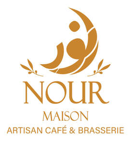

Trade Mark Journal No.2025/030 25 July 2025
UK00004232086 10 July 2025 (9,25,30,35,41,42,43)

- Class 9
- Downloadable mobile applications; Application software for mobile phones; Downloadable software for ordering food and drink; Downloadable loyalty cards; Software for mobile phones relating to hospitality and restaurants; Fireproof clothing; Application software; Application development software; Mobile application software; Web application software; Downloadable application software; Business application software; Web application and server software; Application software for mobile devices; Downloadable software in the nature of a mobile application; Software applications; Downloadable applications; Application software for mobile phones; Downloadable application software for virtual environments; Downloadable smart phone application software; Downloadable software applications; Downloadable mobile applications; Downloadable software in the nature of a mobile application for food delivery and ordering; Application software for smart phones; Educational mobile applications; Smartphone software applications, downloadable; Downloadable application software for smart phones; Educational computer applications.
- Class 25
- Clothing; T-shirts; Hoodies; Caps; Headwear; Footwear; Jackets; Sweatshirts; Leisurewear; Aprons; Uniforms; Clothing; Knitwear [clothing]; Jackets [clothing]; Clothes; Aprons [clothing]; Denims [clothing]; Cashmere clothing; Silk clothing; Ready-made clothing; Leisure clothing; Ties [clothing]; Tops [clothing]; Chaps (clothing).
- Class 30
- Coffee; Coffee drinks; Cappuccino; Decaffeinated coffee; Iced coffee; Chocolate coffee; Coffee beans; Roasted coffee beans; Coffee capsules; Coffee bags; Coffee pods; Coffee flavourings; Coffee beverages with milk; Instant coffee; Freeze-dried coffee; Coffee extracts for use as substitutes for coffee; Coffee substitutes; Cocoa; Tea; Artificial coffee; Chocolate; Pastries; Confectionery; Ice cream; Sorbets; Bread; Flour preparations; Cereal-based snack food; Biscuits; Cakes; Cookies; Dough products; Coffee; Coffee drinks; Decaffeinated coffee; Iced coffee; Coffee capsules; Tea; Green tea; Herbal tea; Cocoa; Chocolate; Chocolate-based beverages; Hot chocolate; Pastries; Cakes; Muffins; Croissants; Biscuits; Cookies; Scones; Brownies; Doughnuts; Bread; Flatbreads; Baguettes; Pizza; Pasta; Noodles; Rice; Ice cream; Sorbets; Frozen yoghurt; Waffles; Pancakes; Sandwiches; Wraps; Cereal bars; Snack foods made from cereals; Sauces; Salad dressings; Honey; Sugar; Seasonings; Spices; Salt; Vinegar; Mustard; Condiments; Bakery products; Coffee; Decaffeinated coffee; Iced coffee; Chocolate coffee; Coffee drinks; Coffee beans; Mixtures of malt coffee with coffee; Coffee beverages; Coffee (Unroasted -); Unroasted coffee; Caffeine-free coffee; Coffee extracts for use as substitutes for coffee; Coffee essences for use as substitutes for coffee; Coffee substitutes [artificial coffee or vegetable preparations for use as coffee]; Malt coffee; Coffee pods; Coffee beverages with milk; Flavoured coffee; Coffee bags; Unroasted coffee beans; Coffee capsules; Coffee flavorings; Mixtures of malt coffee extracts with coffee; Roasted coffee beans; Instant coffee; Freeze-dried coffee; Coffee flavourings; Beverages with coffee base; Beverages with a coffee base; Coffee oils; Espresso; Ground coffee; Coffee based drinks; Coffee extracts; Coffee in whole-bean form; Sugar-coated coffee beans; Beverages made from coffee; Beverages made of coffee; Ground coffee beans; Drip bag coffee; Substitutes (Coffee -); Coffee substitutes; Aerated drinks [with coffee, cocoa or chocolate base]; Coffee essences; Coffee based beverages; Mixtures of coffee; Coffee mixtures; Chicory for use as substitutes for coffee; Cappuccino; Aerated beverages [with coffee, cocoa or chocolate base]; Chicory [coffee substitute]; Prepared coffee and coffee-based beverages; Coffee concentrates; Coffee in brewed form; Mixtures of coffee and chicory; Coffee, teas and cocoa and substitutes therefor; Mixtures of coffee essences and coffee extracts; Mixtures of malt coffee with cocoa; Powdered coffee in drip bags; Ice beverages with a coffee base; Prepared coffee beverages; Coffee essence; Malt coffee extracts; Mixtures of coffee and malt; Coffee [roasted, powdered, granulated, or in drinks]; Chai tea; Tea; Tea beverages with milk; Barley for use as a coffee substitute; Chocolate bark containing ground coffee beans; Extracts of coffee for use as flavours in beverages; Tea-based beverages; Beverages (Tea-based -); Coffee-based beverages; Beverages (Coffee-based -); Flavorings for beverages; Tea beverages; Chocolate-based beverages; Beverages (Chocolate-based -); Flavourings for beverages; Cocoa-based beverages; Beverages (Cocoa-based -); Chocolate beverages; Cocoa beverages; Flavourings of tea for food or beverages; Tea-based beverages with fruit flavoring; Tea beverages (Non-medicated -); Chocolate-based beverages with milk; Flavourings of lemons for food or beverages; Carbonated and non-carbonated tea based beverages.
- Class 35
- Retail services in relation to coffee; Retail services relating to bakery products; Retail services relating to food; Online retail services relating to clothing; Retail services in relation to confectionery; Retail services in relation to desserts; Retail store services in the field of clothing; Shop window dressing; Advertising services; Business management of cafes; Retail services relating to beverages; Online ordering services in the field of restaurant take-out and delivery; Retail services in relation to coffee; Shop window dressing; Shop window dressings; Online ordering services in the field of restaurant take-out and delivery; Retail services in relation to non-alcoholic beverages; Retail services in relation to cocoa; Wholesale services in relation to coffee; Retail services in relation to teas; Retail services in relation to chocolate; Retail services in relation to confectionery; Retail services in relation to desserts; Retail services in relation to foodstuffs; Retail services in relation to bags; Retail services in relation to cutlery; Retail services in relation to seafood; Retail services in relation to bakery products; Retail services in relation to meats; Retail services in relation to clothing; Retail services in relation to sorbets; Retail services in relation to dairy products; Wholesale services in relation to cocoa; Retail services relating to food; Retail services in relation to cups and glasses; Retail services in relation to baked goods; Retail services relating to fruit; Wholesale services in relation to chocolate; Retail services in relation to preparations for making beverages; Retail services relating to bakery products; Retail services in relation to food cooking equipment; Unmanned retail store services relating to drink; Wholesale services in relation to confectionery; Wholesale services in relation to teas; Retail services in relation to ice creams; Retail services in relation to frozen yogurts; Retail services in relation to cups and drinking glasses; Wholesale services in relation to desserts; Retail services relating to clothing; Wholesale services in relation to foodstuffs; Retail services relating to alcoholic beverages; Retail services connected with the sale of clothing and clothing accessories.
- Class 41
- Education services; Training services; Providing online tutorials; Arranging and conducting workshops; Education services relating to food preparation; Conducting workshops and seminars in personal awareness; Providing of training in the field of hospitality; Education services relating to cooking; Education services relating to hygiene; Educational services relating to cooking; Education services relating to waiting; Dietary education services.
- Class 42
- Hosting of websites for cafés; Providing temporary use of non-downloadable software applications for ordering food and drinks; Shop design; Website design services for restaurants and cafes; Design of clothing, footwear and headgear; Designing of clothing; Design of clothing; Design of clothing accessories; Professional advisory services relating to food technology.
- Class 43
- Cafe services; Coffee shop services; Coffee bar services; Restaurant services; Take-away restaurant services; Take-out restaurant services; Bistro services; Brasserie services; Salad bar services; Serving food and drink in doughnut shops; Serving food and drink in restaurants and bars; Mobile restaurant services; Self-service restaurants; Udon and soba restaurant services; Washoku restaurant services; Tempura restaurant services; Ramen restaurant services; Sushi restaurant services; Spanish restaurant services; Hotel restaurant services; Providing of food and drink; Preparation of food and beverages; Takeaway food and drink services; Serving hot and cold beverages; Serving cooked meals; Serving desserts and pastries; Dine-in restaurant services; Serving artisan coffee; Juice bar services; Smoothie bar services; Cafe services; Café services; Cafés; Coffee shops; Coffee shop services; Serving food and drink in Internet cafes; Bar and restaurant services; Restaurant and bar services; Providing food and drink in Internet cafes; Bistro services; Take-away restaurant services; Coffee bar services; Salad bars [restaurant services]; Serving food and drink in doughnut shops; Fast-food restaurant services; Hotel restaurant services; Self-service restaurant services; Providing food and drink in doughnut shops; Take-out restaurant services; Restaurant services; Restaurants (Self-service -); Self-service restaurants; Mobile restaurant services; Serving food and drink in restaurants and bars; Brasserie services; Restaurant services incorporating licensed bar facilities; Catering in fast-food cafeterias; Eateries; Providing food and drink in bistros; Providing food and drink in restaurants and bars; Snack bar services; Tourist restaurants; Delicatessens [restaurants]; Cocktail lounge buffets; Restaurants; Office catering services for the provision of coffee; Provision of food and drink in restaurants; Restaurant reservation services; Serving food and drink for guests in restaurants; Self-service cafeteria services; Restaurant services for the provision of fast food; Take-away food and drink services; Booking of restaurant seats; Grill restaurants; Lounge services (Cocktail -); Cocktail lounge services; Catering of food and drinks; Takeaway food and drink services; Food and drink catering; Catering of food and drink; Catering (Food and drink -); Teahouse services; Airport lounge services; Catering services for company cafeterias; Serving of alcoholic beverages; Providing food and beverages; Provision of food and beverages; Preparation of food and beverages; Serving beverages in microbreweries; Coffee supply services for offices [provision of beverages]; Consultancy services relating to food; Consultancy services relating to food preparation; Services for providing food; Catering services for the provision of food; Food preparation services; Food reviewing services [provision of information about food and drinks].
Mohamed Abdalla Elbagouri